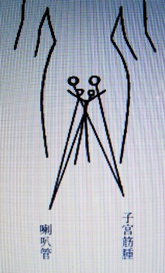

浄霊の原理 ９ （治療時代）
明主様御講話 「浄霊の原理と方法」
「いうまでもなくこの治療は、霊的治療というもので、これだけを知っておくとよろしい。
人間は霊と体でできている。霊というものは人間の形をしているゆえに、指なら指一本でも霊はある。
死ぬと霊界という別の世界に行くことになる。
生きてると肉体は現界にいるが霊は霊界にいる。
煙草吸ってると、肉体は娑婆にいて煙草を吸ってるが、霊界では霊界の煙草の霊を吸ってることになる。
死ぬということは霊が体をすてて霊界へ行くことである。
肉体がなくなれば霊体はそのまま霊界へ行くこととなる。
その原理から考えるとこの治療のことは判る。
今日はすべて科学で成り立ってる文明で、目に見えるものだけを元としている。
もし科学で発見されたものだけとすれば、
科学がだんだん新しいものを発見することは、判らぬものがまだたくさんあるということである。
そういうわけで、霊が主で体が従であるゆえに、霊さえ治せば体は治ってしまう。
私は霊的研究をして、それを土台としたから霊を治すことを知った。
霊を治すのはどういうわけかというと、元来病気は毒素が溜まって起こるものであって、毒素、あらゆるいっさいのものは固まる性質のものでひとり人間の毒素のみではない。
土が固まって石になり、石が固まって金属になる。
学問では地球から吹き出たというが、そんなことはない。
鉱物が固まれば必ず金属になる。
ある程度固まるとそれは人間の新陳代謝に支障を来す。
そこである程度固まると溶かして出そうとする働きが起こる。これを称して病気という。
熱、痛み、咳など出ると苦痛だから、それを逃れんとする。
苦痛によって免れると思えばいいが、それをわるいと思い間違えてきた。
これが病気多生の原因である。このままにしておくと生命が危ないというので、氷で冷やしたり毒をのんだりした。
それで浄化停止される。苦痛は緩和される。その間違いを知らせなくてはならぬ。
私は文章で知らせようとして問題になった。
ゆえに口でしゃべって判らすより方法はない。
この原理が判れば、病気は恐くないどころかありがたいものである。
ゆえに風邪は神の恩恵だといっている。
この恩恵を少しでもいただかなくてはならぬ。
霊体の曇ってる所は血が濁ってるとか固まりがある。
一部の曇りではなく全体が曇ってる。全体の曇りとは全体の血が濁ってることである。
始終浄化され、毒は一所へ固められる。それが病気である。
注射でも身体中へまわる。ゆえに身体中まわすと浄化力が弱る。
それでチフスなどに罹らぬ。それでチフスは逃れるが、今度は赤痢などになる。
だから、赤痢の次にはチフスが毎年交代にはやるのである。
ちょうど窃盗を防いで強盗を入れるようなものである。
いったん身体へまわった毒が身体中のどこかへ、使う所へ集まる。
女中などはよく手へくる、手を使わぬ者は足へくる。
いまの人は十人中七、八人は足が痛い。人間は足を動かすからである。
また、いまはホルモンの注射がはやってるので、足の痛む人が多い。
薬などは、霊体中には黒くなってる。毒素は霊的にいうと黒いもの・・・曇りである。
この曇りを取るのは光である。人間の霊は光を持っていて、このことを霊衣という、薄い光が発光している。
霊体の中へ光を入れると光が身体中へまわって甦る。
それ以外助かる道はない。ごく健康の人とか、心の良い人ほど光が強い、厚くなる。
私は観音様から光をいただいており、その光の伝達者である。
観音様は光の仏様だから光明如来という。
御守りには光が滲み込んでる、それが手を通して出る。
すぐに通ずる人と時間をおいて通ずる人がある。
この治療は話しながらやってはいけない、按摩のごとく体的療法になる。
話すると霊は入っていない、話さぬことを原則としなくてはならぬ。
必要以外の話は治療がすんでからすべきである。
話しながらするのは一つの按摩になるので治り方がズッと違う。
治療の前に、「この中清まれ」とかく、字はよほど働くので、字で治す人あり、また、何度も字をかくうちに治ることがある。
本当はわるい所へ字をかくのだが、時間がかかるからよろしい。
肩をさわって熱のある人は、必ずこめかみに熱あり、この熱は意味があって、こめかみに熱があると頭が重いとか、痛む。
子供など癇癪もちである。治療すると性質もかわる。
考えがまとまらぬ、ここは毒が溜まりやすい。
後頭部は頭部いっさいの機関を司り、考えるのは前頭部。
神経衰弱は脳貧血（頸のまわりに毒が溜まり血管を圧迫する）首筋、頸腺横に塊あり。
気ふさぎ、ひどいのは厭世的になる、ヤケクソになり自殺などする。
頭痛・・・脳貧血によるもの、頭に直接に溜まれるあり（頭をおして痛む箇所あり）。
一番多いのは脳溢血（横から後ろのほうへかけた間あたりへ溜まる）。
脳溢血にならず中風になる人は軽い。これは脳へ行かず、体のよわい人・・・治りいい。脳膜炎は（膿）脳溢血（毒血）とまちがえらる。
医者でよくいう結核性脳膜炎は、延髄より小脳へ入ってゆく、小脳へ入らず上のほうをまわるのもあり。
脳溢血は横から、膜炎は後ろから（後ろが張ってる）。
不眠症・・・脳溢血と同しような所。
脳膜炎などの毒は脊髄の付近（多く両側）の毒がだんだん昇る、頭へ入って前頭へくるのが脳膜炎、小脳が嗜眠性、後頭部へ溜まるのが脊髄膜炎、その少し下へ溜まるのを脊髄癆（ろう）などという。
脳閉塞・・・昔は卒中とか卒倒とかいった。首や肩が凝って極度に達するとき、その圧迫により血管が切れる、そうして死ぬ。これは猛烈に肩の張ってる人にある。
目は頭の毒素の集注・・・治療は奥のほうをしなくてはならぬ。
蓄膿より肥厚性鼻炎、蓄膿がもっと固まると鼻茸になる、鼻柱に溜まるものあり、すると鼻孔が小さくなる。口から呼吸するようになる。
煙草を吸うと鼻を刺激し、前頭の働きがよくなる。肥厚性鼻炎は鼻の毒素が強いため、粘膜を刺激して脹れたり乾いたりする。
口唇の二重のようになったり、口唇痺れ、変色しているのは吸入薬の中毒、口、舌があれるのは、いずれも薬毒。
顎と頬に癌生ずるあり。
慢性中耳・・・耳垂・・・無痛・・・（耳裏治療）。
風邪・・・（耳下腺、淋巴腺、左右いずれか、肩のこともあり）。
声帯の回転・・・西洋人はおそく、日本人は細く多い。運転のおそいのは声が荒い、細いと高い声になる。
バセドー氏病・・・

この辺は目と関係あり、この辺を治療して目のよくなることあり
バセドー氏病に似て声帯の下のほう脹れることあり・・・ために呼吸困難となる

手上がらぬ・・・腕の付け根、痛い所をする
患者治療は、右を頭に横臥さすのが本当である。

肋膜の残れるあり
息切れする
息切れ・・・肺の外部か内部に圧迫するものあり。内部のときは痰があり、喉の付け根で音してヒュウヒュウいう。
肺の容積減ってるとき、どこかに熱あり、そこに痰がある。
肋間神経は背部はまれで、胸に多い。この咳は強い、・・・肋膜を通して肺へ行くためである。爆発的に強くする・・・よく喘息にされる。
レントゲン十回以上かけたのは容易に治らぬ。
肺炎は背部の場合もよくある。
肺炎・・・肩の場合あり。
咳（一） 肋間神経
（二） 横隔膜
（三） 臍のまわり（喘息）
（四） 股より陰部の毛の際（恥骨）
（五） 腎臓部
幽門狭窄（嘔吐）（臍のまわりの毒の場合あり）。肝臓圧迫されると胃の働き弱る。
痩せた人は臍に塊あり・・・食欲なくなる。
胃下垂・・・毒素に胃圧迫され平らになる。
アトニーとは、胃酸過多のこと。
癌は心窩（しんか）部より臍のまわりにできる。
慢性下痢・・・臍の辺の毒が少しずつ溶けて出る。腹部に熱い所があれば下痢続く。
便秘・・・臍から下の塊、直腸の圧迫。毒のため腸の蠕動（ぜんどう）妨げらるる場合。

子宮筋腫
喇叭管
癌の人は必ずヌラを出す。
寝小便・・・陰茎の付け根（右多し）、（括約筋）縮まってる。
腰痛は腎臓、腰は熱をもつと重い。注射の毒もよく溜まる。
脚気は脚の内側が痺れる。
足の吊り・・・両横筋、裏側。
麻疹の熱・・・不明の熱、三、四日続く、治療してもさめぬ、疹生ず（治療二度くらい）。
小児麻痺は霊が全身を支配し、癲癇は一部を支配する。
脚気は白米中毒ゆえ小僧などに多い。おかずをたくさん食うとか、蕎麦など食うといい。」